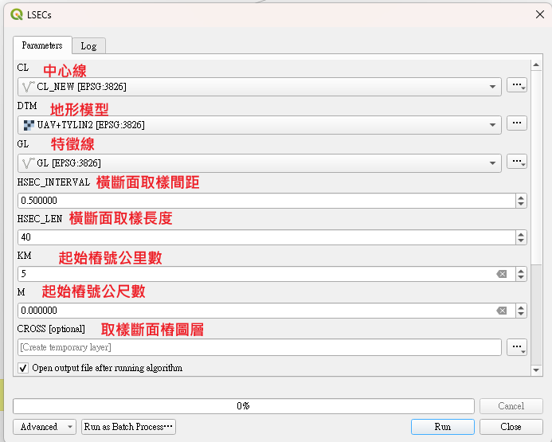
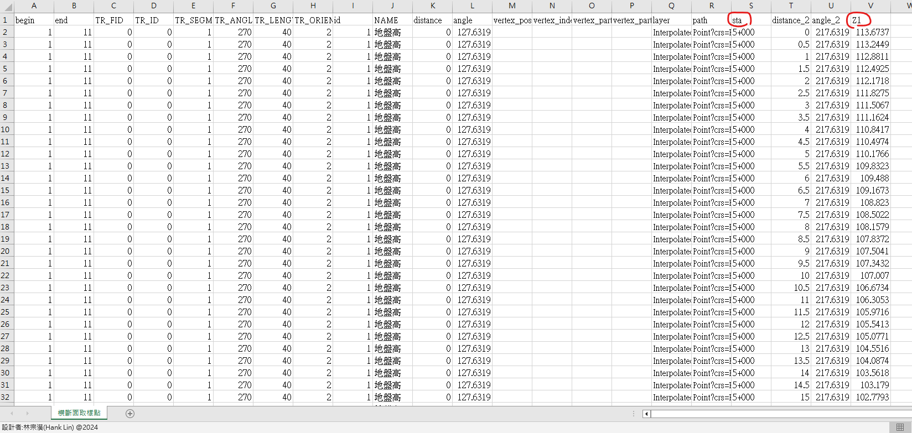
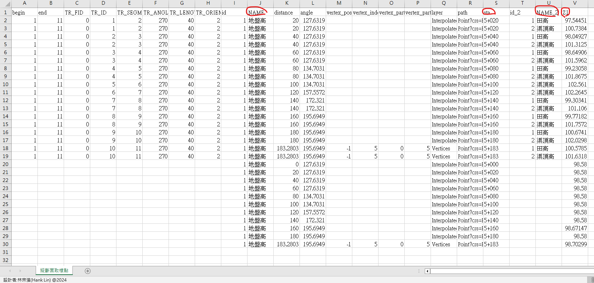

QGIS地形縱橫斷面工作流
前言
QGIS是一套免費開源的自由軟體，可以在大多數的作業系統中進行使用，工具箱(ToolBox)有很多實用的運算工具，為達到運算成果目的步驟會比較多，使用者此時較容易因此放棄，直到筆者最近研究QGIS提供的模型建置器(Processing modeler)才發現平常需要一直重複進行的運算工具，可以在這個低度程式碼的環境中被組裝建立，讓大多數的工作變成一鍵完成。
既然能夠自動化沒道理不好好研究它，工作流只要能被組裝好，對大家來說都是一件好事，畢竟學習成本降低，用的人就越多，就會越多人發現它好用XD

地形模型
近期的工作場景是除了特徵線外還有散佈在周邊的各種獨立點，理論上應該要透過不規則三角網進行地形模型建置，欲建立完整的地形模型則會需要透過頂點加密搭配獨立點進行運算，QGIS地形模型整理請參考，不在本篇討論範圍。
縱橫斷面
地形模型都處理好之後，後續縱橫斷面的繪製仍需要再回到CAD中進行，畢竟QGIS比較適合做運算，不適合做圖，然而HanksVBA繪圖資料庫當初就是為做圖而生，只要匯入QGIS產出的CSV後就能產出縱橫斷面，上述流程即所謂QGIS地形縱橫斷面工作流。
操作影片
基本資料
DEM.tif
此為整理完畢後的地形模型，不規則三角網可以透過將特徵線加密搭配可信任的獨立高程點進行混合運算。
CL.shp
中心線，屬性欄位NAME為地盤高。
GL.shp
特徵線，屬性欄位NAME為田高、路高、渠頂高、XX高。
操作步驟
QGIS
- 開啟QGIS新專案
- 新增Raster，選擇DEM.tif
- 新增Vector，編輯CL.shp內容
- 新增Vector，編輯GL.shp內容
- 開啟Processing modeler
- 載入Lsecs.model3
- 執行模型
- 將會得到兩個檔案
- 縱斷面取樣點.csv
- 橫斷面取樣點.csv



⭐ 取得這兩個檔案之後再與其他工具做資料交換，這裡我用的工具是我之前撰寫的，也可以改成常用的自製外掛。